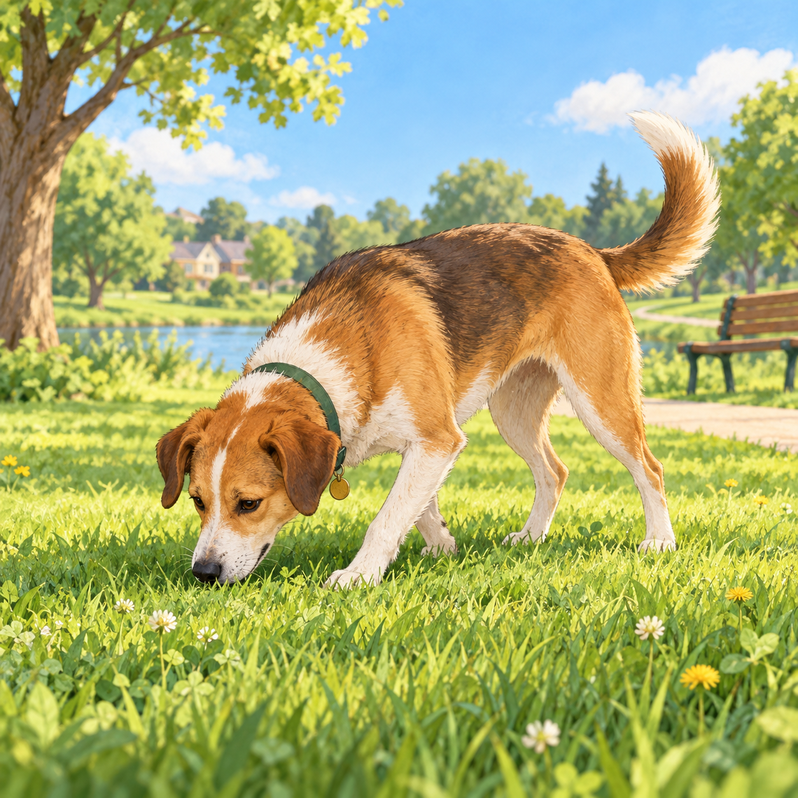

Information gathering
Sniffing & exploring
Nose work helps dogs learn about the world and can be calming enrichment.
Try: Give sniff walks time instead of rushing every stop.
Notice: Sudden frantic sniffing can also be a way to release pressure.